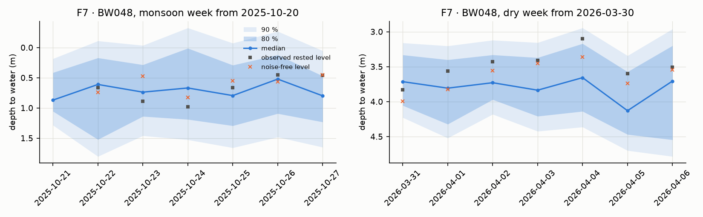

ML based method · results · Digital twin: five years, 579 wells
What the ML based five-year twin showed.
Every number below is on the test year, August 2025 to July 2026, forecast every week for 579 wells from data up to that day, and scored on the twin's observed levels (sensor noise ±0.2 m). How the twin and the forecaster were built.
Error by day ahead: the physics core gets halfway, the learning layer gets the rest
Seven days ahead the forecast is 0.82 m off on average, against 1.33 m for the physics core alone and 2.07 m for assuming the level stays where it is today.
Average error in metres (lower is better)
Show the numbers as a table
Pooled over every forecast. A minority of deep, erratic wells pull the average up: for the median well the error is 0.38 m at day 1 and 0.48 m at day 7, against 0.84 m for assuming nothing changes. The monsoon is the hardest season at day 7 (0.93 m), as recharge arrives on a per-well delay the model must infer.
Wells the model had never seen
116 wells were held out of training entirely. The method transfers: their day-7 skill sits within 0.02 of the wells it trained on.
The last tile is the case for the physics. Trained on six months of history, the learning layer alone is worse than doing nothing (2.16 m against 2.07 m); with the physics core underneath it reaches 1.18 m. Real deployments start with months of data, not years: the physics carries the forecast at the start, the learning layer takes over as history accumulates.
Are the ranges honest?
The 80 % band held 81–85 % of readings and the 90 % band 92–94 %, across the seven days ahead: within one to five points of the label, and on the safe side.
Share of readings that fell inside the band (%)
Show the numbers as a table
One well, two weeks
What the operator sees. Well BW048 in a monsoon week and a dry week: the forecast, its ranges, and what the sensor then recorded.

Blue line: the forecast. Shaded: the 80 % and 90 % ranges. Black squares: what the sensor then recorded. Orange crosses: the twin's noise-free truth. Depth grows downward, so lower on the chart is deeper. On the demo week the median 10–90 range is 0.9 m wide on day 1 and 1.1 m on day 7.
The dry-run flag
A dry-run episode is a run of dry-run events at most seven days apart. The flag is scored a week ahead: an episode counts as caught if an origin one to seven days before its start was flagged. Twelve wells that ran dry six or more times in the calibration year are chronic and are scored separately: a maintenance case, not a forecasting one.
The operator's dial: more warnings, more alarms
Allowing one false alarm per well-year instead of 0.8 raises the catch rate to 65 %; allowing 1.5 raises it to 67 %. The operator chooses the point; the model reports what each point costs.
Episodes caught (%) against false alarms per well per year, test year
Show the numbers as a table
Part of the gap to 80 % is structural: some dry runs follow a same-day shock, a long session in a heat spell, that no week-ahead forecast can see, and the ±0.2 m noise blurs the last half-metre before the intake. Chronic wells: 57 % of episodes caught.
The weekly table
Every Monday the pipeline writes one row per well: the 10th, 50th and 90th percentile level for each of the seven days, the calibrated 80 % band, the safe pumping volume per day and for the week, the chance of a dry-run day, the flag, and the date of the well's last session, so a stale row says so. Four wells from the week of 27 July 2026:
All 579 wells have a row; 578 carry a forecast. The one that doesn't has been silent since January 2024, and its row admits it has nothing current to say. The weekly safe volume is the one output that missed its target clearly: 34.9 % median error against 10 %, over-estimated in 74 % of well-weeks. The cause is the recovery-pace fit, and a sharper fit is the next item.
- From the sensor files alone, the pipeline reads each well's behaviour and forecasts it a week ahead at 61 % less error than doing nothing.
- The ranges mean what they say, and hold on wells the model never saw.
- The physics layer is what makes the method usable from the first months of real data.
- The dry-run flag gives four days' warning with fewer than one false alarm per well per year.
- All of this is on a twin with ±0.2 m level noise; no real level measurement was used.
- The safe-volume estimate is too optimistic and the flag catches 63 % of episodes, not the 80 % aimed for.
- The twin's recharge was too generous in this iteration and is being corrected; results will be re-earned on the corrected twin.